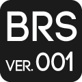

BRS(Ver.001)
BRSとは
BMSに関して
必須事項
- BMSプレイヤーで正しく再生できる形式であること（LR2で再生できることが望ましい）
- BMSとして正常にプレイできる譜面を少なくとも一つ収録すること
- BMSとして未発表の作品であること
- zipやrarなどの一般的な圧縮形式を用いて圧縮すること
禁止事項
- 著しく公序良俗に反するBMS
- キー音なしBMS
- BMSA等のBMS
- BEMANIシリーズなど承諾を得ていない商業作品の音声や映像を用いたBMS
- Musicboxを代表とした、サウンドセット音源のみで構成されたBMS
- MIDIデータをそのまま用いたBMS（MIDIから録音した音の使用は可能）
- 肖像権を侵害していると思われる画像を引用しているBMS
- 特定の人物の誹謗中傷、及び罵倒を目的としているBMS
登録に関して
禁止事項
- 未完成品、ダウンロードリンクがないなど先行登録に該当する行為
- BMS登録後のアーカイブ修正
- 評価期間中の作品公開の停止
許可事項
- BMS登録後、音が意図したように再生されないなどの致命的な不具合があった場合のアーカイブ修正は、コメント欄に修正箇所を明記することを条件に許可する
- 差分やBGAの追加は許可する
インプレッションに関して
禁止事項
- 作品に無関係なコメント
- 誹謗中傷を含んだコメント
- 自作自演による水増し行為
- 成りすましによる詐称行為
- 会場内を荒らす行為
- 制作者個人の言動を評価の対象とする行為
2016 q/stol All right reserved.